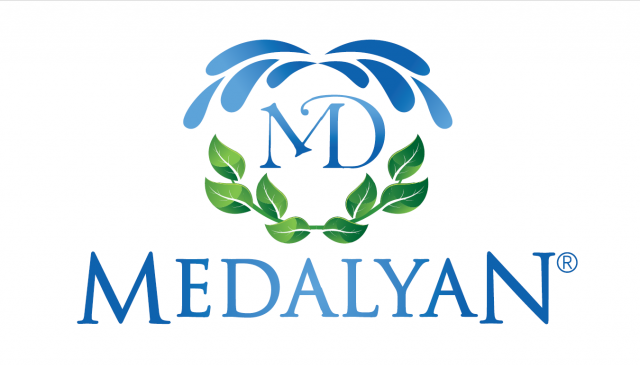

MITEX 2026 · Турция · Стенд 7С901
MEDALYAN HIRDAVAT SAN. VE TİC. LTD. ŞTİ.
Карточка проверена 10 ноября 2026, 09:28 · Источник ↗ · Снимок оригинальной карточки ↗
О компании
Компания Medalyan, основанная в 2003 году, зарекомендовала себя как один из ведущих брендов в сфере оборудования для полива сада. С момента основания компания уделяет особое внимание качеству, инновациям и удовлетворённости клиентов, предлагая современные и эффективные решения для полива и ухода за садом. Medalyan непрерывно ведёт исследования и разработки силами команды опытных инженеров и дизайнеров. Компания создаёт удобную и функциональную продукцию, призванную сделать уход за садом проще и эффективнее. Внимательно следя за новыми тенденциями отрасли, Medalyan внедряет последние достижения в области технологий полива, стремясь обеспечить высокую эффективность и надёжность своей продукции. Ассортимент Medalyan включает поливочные пистолеты с курковым механизмом, дождеватели с регулировкой направления и угла полива, соединители и переходники для шлангов, редукторы, адаптеры для кранов, автоматические коннекторы для шлангов, держатели для шлангов и кабельные стяжки. Продукция отличается долговечностью, удобством использования и технологиями, способствующими экономному расходу воды. Компания уделяет большое внимание удовлетворённости клиентов и обеспечивает надёжную послепродажную поддержку. За годы работы Medalyan успешно зарекомендовала себя как на рынке Турции, так и за её пределами. Благодаря качественной продукции и высокому уровню сервиса бренд завоевал доверие владельцев садов во многих странах мира. Medalyan намерена и дальше укреплять свои позиции в сфере садовых систем полива, развивая инновационные решения, которые делают уход за садом проще и удобнее для пользователей по всему миру.
Контакты
Все контактные сведения из карточки
Контакты Юридический адрес Телефон: +902124861113 E-mail: muhasebe@medalyan.com Адрес: Турция, İSTANBUL, Selahaddin Eyyubi Mah. Ugur Mumcu Cad. No: 33 No: 36-38 Esenyurt /İSTANBUL Веб-сайт: https://www.medalyan.com E-mail: muhasebe@medalyan.com Телефон: +902124861113
Все рубрики участника
Mitex - Рубрикатор
- 2. Садовая техника, инструмент, инвентарь, оборудование, расходные материалы и насосы
Зал
- Зал № 7
Участник выставки
- MITEX
Видео, каталоги и документы
В доступной карточке нет видео или документов. Смотрите сайт участника.